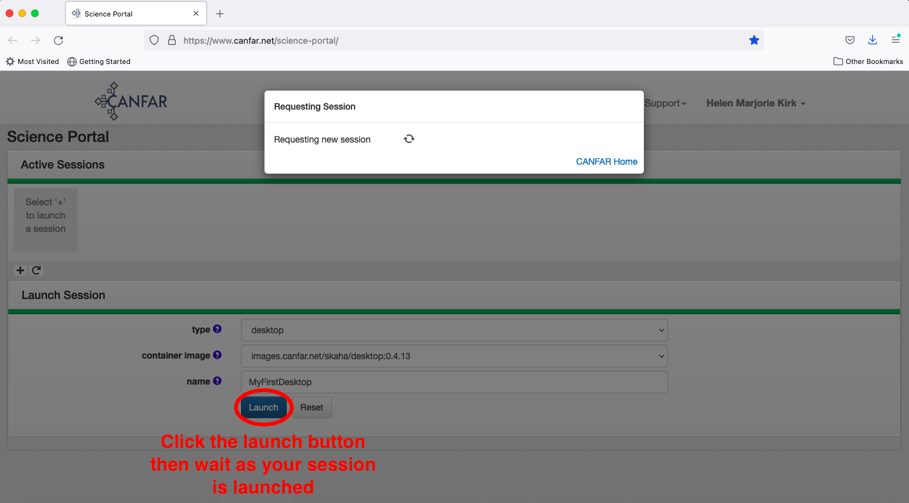
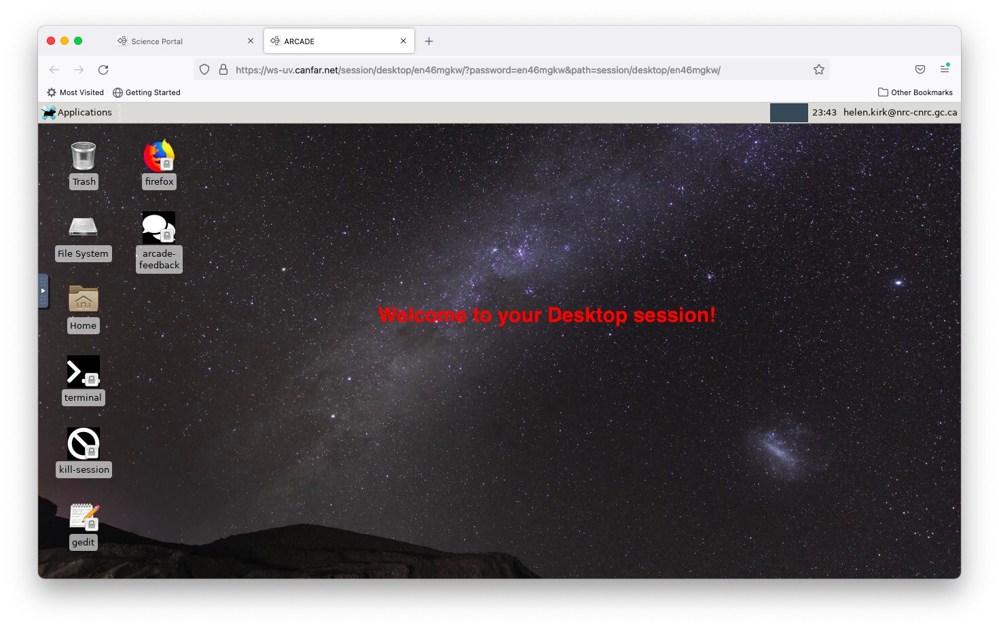
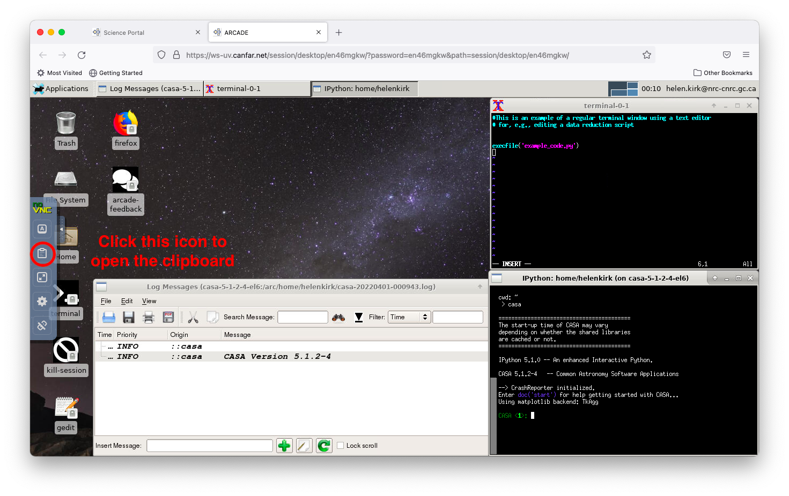

Launching Desktop Sessions¶
Desktop sessions on CANFAR provide a full Linux graphical environment directly in your browser, with access to CANFAR storage. Most astronomy software is launched in dedicated containers on separate worker nodes and connects to your browser session using X11 protocols. This guide explains how to launch and use desktop sessions, including CANFAR-supported and user-contributed astronomy software.
🎯 What You'll Learn
- Launching, connecting, and sizing desktop sessions
- Available software and how to launch it
- Managing files and storage within desktop sessions
- Tips for collaboration, performance, and troubleshooting
Overview¶
Desktop sessions offer:
- Full Linux desktop: Accessed in your browser, with CANFAR storage integration
- Multi-application workflow: Run multiple programs and containers simultaneously
- Traditional interfaces: Use graphical astronomy software and desktop tools
- File management: Visual file browser and management tools
- Session persistence: Resume work exactly where you left off
Common use cases include:
- Running astronomy software in containers (DS9, Aladin, TOPCAT, CASA, etc.)
- Multi-step workflows with several applications
- Teaching, demonstrations, and collaborative analysis
- Legacy or specialised software requiring a desktop environment
Creating a Desktop Session¶
Step 1: Select Session Type and a Name¶
From the Science Portal dashboard, click the plus sign (+) to create a new session, then select desktop as your session type.

Choose a descriptive session name to help you identify it later (e.g., data-reduction, teaching-session, multi-instrument-analysis).

Step 2: Launch Session¶
Click the Launch button and wait for your session to initialize. Desktop sessions may take slightly longer to start than other session types.

Your session will appear on the Science Portal dashboard. Click the desktop icon to access your session.

Connection Timing
Sometimes it takes a few seconds for the session link to work properly. If you see a "Bad gateway" error, wait a moment and try again.
Connecting to Your Desktop¶
Initial Connection¶
Click the Connect button to access your desktop environment.

Desktop Environment¶
When you connect, you'll see a full Linux desktop in your browser. Key features include:
- Taskbar: Application launcher and system controls
- File manager: Browse CANFAR storage and files
- Terminal: Command-line access
- Shortcut icons: Quick launch for DS9, Aladin, TOPCAT, and Firefox
- Astro Software menu: Access CANFAR-supported and user-contributed astronomy containers
Most applications are launched in containers and connect to your desktop session using X11 protocols. Only a few tools are native to the desktop itself.

Session Persistence¶
and work remain open. When your session becomes inactive, you'll be returned to the connection page. Click Connect again to resume exactly where you left off - all your applications and work remain open.
Available Software¶
Astronomy Applications¶
The desktop session provides access to astronomy software in two ways:
- Shortcut icons: DS9, Aladin, TOPCAT, and Firefox are available directly on the desktop for quick access.
- Astro Software menu: Find CANFAR-supported and user-contributed astronomy containers under Applications → Astro Software. These containers run on separate worker nodes and connect to your desktop session.
You can also access other tools and environments, including Python (with AstroPy, Jupyter), CASA, IRAF/PyRAF, and more, depending on the available containers and desktop configuration.
Working with Applications¶
Launching Applications¶
Method 1: Astro Software Menu¶
- Click the Applications menu in the taskbar
- Select "Astro Software" to browse CANFAR-supported and user-contributed astronomy containers
- Choose your desired application to launch it in a dedicated container
Method 2: Desktop Shortcuts¶
- Click the shortcut icon for DS9, Aladin, TOPCAT, or Firefox on the main desktop to launch these applications quickly
Note: Most astronomy applications are launched in containers and connect to your desktop session. You cannot start a terminal and simply run ds9 & or similar commands, as these applications are not installed natively in the desktop environment.
Method 3: File Association¶
- Double-click FITS files to open in DS9 (if available)
- Right-click files for "Open with" options
Example: Multi-Application Workflow¶
Here's a typical desktop workflow for optical astronomy:
- File Management: Use file manager to organize data
- Image Display: Open FITS files in DS9 for inspection
- Analysis: Launch Python/Jupyter for data analysis
- Documentation: Use text editor for notes and scripts
- Results: Save plots and analysis outputs
CASA Desktop Usage¶
To use CASA with its graphical interface, launch it from the Astro Software menu. CASA runs in a dedicated container and connects to your desktop session, allowing access to its full plotting and visualisation tools.
Desktop Session Tips¶
Copy & Paste Between Containers¶
Since different containers (e.g., CASA and terminal windows) in a desktop session may run on different remote computers, copying and pasting text between containers requires using the Clipboard application.
Accessing the Clipboard¶
- Open the Clipboard: Click the arrow at the far left of the desktop to open the application menu
- Find Clipboard: Look for "Clipboard" in the middle of the application list and click it

Using the Clipboard¶
The Clipboard serves as an intermediary for transferring text between containers:
- Copy text: Highlight text in the source container and use
Ctrl+Shift+C - Transfer via Clipboard: The text should appear in the Clipboard application
- Select in Clipboard: Highlight the text in the Clipboard and press
Ctrl+Shift+C - Paste to target: Click in the destination container and use
Ctrl+Shift+V

Keyboard Shortcuts
- Copy:
Ctrl+Shift+C - Paste:
Ctrl+Shift+V - These shortcuts work consistently across all desktop containers
Adjusting Font Size¶
Desktop containers support adjustable font sizes for better readability:
Changing Terminal Font Size¶
- Access font menu: Hold
Ctrland right-click anywhere in a terminal window - Select size: Choose from the available font size options (Small, Medium, Large)
- Apply immediately: Font changes take effect instantly

This feature works in: - Terminal windows - CASA command-line interface - Text-based applications
Font Persistence
Font size changes apply only to the current session. You'll need to readjust when starting new sessions.
File Management¶
Storage Access¶
Your desktop session provides access to:
/arc/projects/[projectname]/: Shared project storage/arc/home/[username]/: Personal persistent storage/scratch/: Temporary scratch space, unique to each application.
Persistence Reminder
Use /arc/projects/ or /arc/home/ for important files. /scratch and /tmp/ will not persist after the session ends.
File Operations¶
Use the graphical file manager for:
- Drag-and-drop: Move files between directories
- Visual browsing: Preview images and data files
- Batch operations: Select multiple files for operations
- Permissions: Set file and directory permissions
Ending Sessions¶
To properly end your desktop session:
- Save all work: Ensure data is saved to persistent storage
- Close applications: Exit programs cleanly
- Disconnect: Close the browser tab
- Delete session: Use Science Portal to free resources
Troubleshooting¶
Common Issues¶
Session won't connect¶
- Wait 30 seconds and try again
- Check browser compatibility (Chrome/Firefox recommended)
- Disable browser extensions that might interfere
Poor performance¶
- Check resource usage with
htop - Close unnecessary applications
- Consider increasing session memory
Applications won't start¶
- Ensure you are launching applications from the Astro Software menu or desktop shortcuts
- Verify sufficient memory is available
- If issues persist, check for error messages in the application window or contact support
File access problems¶
- Verify paths to
/arc/projects/[projectname]/ - Check group permissions
- Ensure files aren't locked by other processes
Browser Optimization¶
For best performance:
- Use Chrome or Firefox: Best compatibility and performance
- Close other tabs: Free up browser memory
- Stable connection: Ensure reliable internet connection
- Disable browser extensions: Remove potential conflicts
Getting Help¶
- Support: Email support@canfar.net
- Community: Join our Discord for desktop tips
- Documentation: Check software-specific guides for DS9, CASA, etc.
Next Steps¶
- CASA Desktop Workflows: Advanced CASA usage
- Radio Astronomy Guide: Desktop-based radio analysis workflows
- Batch Processing: Scale up desktop workflows
- Notebook Sessions: Alternative analysis environment